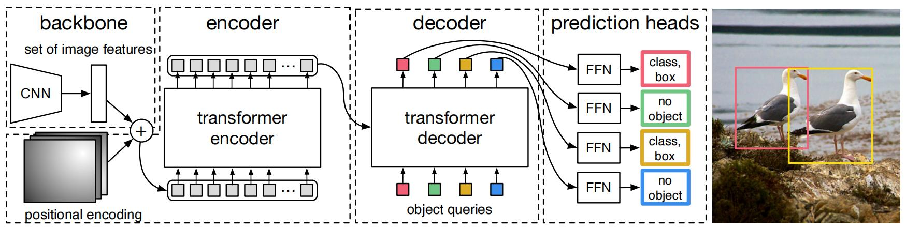
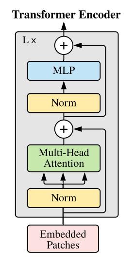

DETR——基于Transformers的端到端目标检测器¶
综述¶
会议时间：European Conference on Computer Vision 2020 (ECCV, 2020)
论文地址：https://www.ecva.net/papers/eccv_2020/papers_ECCV/papers/123460205.pdf
源码地址：https://github.com/facebookresearch/detr（Facebook）
介绍¶
传统的目标检测都不是端到端的检测方法（例如Faster R-CNN，YOLOv3等等），网络的输出较多，需要再利用NMS运算过滤重叠率较高的边界框，解决冗余问题，并且基于锚点的算法还需要根据具体任务来预设锚点，实施起来比较麻烦。本文提出了一种新的目标检测网络架构，可以实现端到端运算，网络输出的结果就是最终的预测结果，不需要额外的运算，具体网络结构如下图所示：

核心思想就是预设一组目标查询向量（类似于集合的思想，文中预设100个），每个向量最后都会预测出一个物体，如果向量被预测为了背景，则丢弃该预测，如果被预测为前景，则输出预测结果。
网络结构¶
网络主要由三部分组成，CNN主干特征提取网络、Transformer编码-解码器、预测头（FFN），其中主干网络使用经典的CNN结构（如ResNet），预测头由多层感知机（MLP）组成。
Transformer编码器
编码器主要由六个Transformer编码器模块组成，首先使用1\times1的卷积将CNN得到的特征图沿通道方向压缩维度，并且拉直宽高维度，每个通道变成一个向量，得到编码特征，尺寸由(2048,\frac H{32},\frac W{32})变为(256,\frac {H}{32} * \frac W{32})，之后将位置编码和编码特征依次传入每个Transformer模块中做编码操作，更新编码特征。
在多头注意力中，q、k元素传入位置编码与编码特征相加后的数据，v传入特征图。注：kqv的关系用一句话来说就是根据kv的键值匹配关系，预测q对应的数值，根据kq的相似度对v做加权求和。
Transformer编码器模块如下图所示：

Transformer解码器
解码器由六个解码模块构成（与Transformer中的解码模块相同），每个模块均以编码特征、位置编码、目标查询向量（预设的目标向量）、解码特征作为输入，解码特征初始化为0 。
首先目标查询向量做自注意力操作，将查询向量与解码特征传入多头注意力，其中q、k元素传入目标查询向量与解码特征相加后的数据，v传入解码特征。之后再将所得数据传入多头注意力中，q传入解码特征与物体查询向量相加，k传入编码特征与位置编码相加，v传入编码特征。
特征经过六组解码模块之后，会得到尺寸为(N,256)的解码特征，再将此特征传入预测头，可以得到物体类别以及边界框坐标数据。
注：
- 特征传入TF编码器就是为了让网络可以学习全局特征，更好地从全局的角度去解决问题（类似NL模块）；
- N在预设时要大于每张图的物体数量，一般默认设成100；
- 类别包含背景类，预设的目标被预测为背景时，则丢弃该预测数据；
- 在解码中，物体查询向量要先做自注意力操作，使得各个查询向量可以相互通信，让不同的向量可以关注不同的物体，防止不同向量去预测同一个目标。换个角度思考，正是由于注意力机制在计算机视觉中广泛的应用，才使得端到端目标检测算法的实现成为可能，让不同边界框之间可以相互关注，解决了边界框冗余问题。
标签匹配¶
除了利用Transformer结构解决边界框之间的冗余，还有一个问题就是在训练过程中如何将查询向量的预测结果与标签相匹配，也就是如何判断每个查询向量是该预测前景还是该预测背景。对于每个物体标签，我们所期望的就是匹配一个和他最接近的预测向量，而每个预测结果只能去匹配一个标签，不能出现“重复预测”的现象，因此该任务可以视为一个二分图匹配问题，本文使用匈牙利算法去匹配。“是否接近“这一概念可以利用损失衡量，损失越小，说明越接近，越应该匹配这组关系，因此匈牙利算法中节点之间的权重可以使用损失去替代。查询向量的预测结果\hat{y}_{\sigma(i)}与物体标签y_i之间的损失权重可以表示为：
首先计算每个查询向量的预测结果与每个标签之间的损失，之后筛选出为每个标签匹配出相似度最高的预测结果。匹配到标签的预测结果利用标签去计算检测损失，包括用于优化分类性能的交叉熵损失和优化边界框预测性能的L1、GIoU损失；未匹配到标签的预测结果统一匹配成背景类别，只参与模型分类性能的优化，不参与边界框预测的优化。
注：
- DETR标签匹配的核心匹配思路就是最小化损失总数值，也就是如何匹配标签与查询向量之间的关系可以最小化总损失大小；
- 不能单纯利用IoU去衡量预测是否接近，因为IoU只关注边界框位置是否重合，目标检测结果还包含类别这一概念，因此需要综合类别与边界框去判断是否接近。
源码¶
网络结构¶
前向传播流程：输入图像→backbone→encoder→decoder→prediction head
class DETR(nn.Module):
""" This is the DETR module that performs object detection """
def __init__(self, backbone, transformer, num_classes, num_queries, aux_loss=False):
""" Initializes the model.
Parameters:
backbone: torch module of the backbone to be used. See backbone.py
transformer: torch module of the transformer architecture. See transformer.py
num_classes: number of object classes
num_queries: number of object queries, ie detection slot. This is the maximal number of objects
DETR can detect in a single image. For COCO, we recommend 100 queries.
aux_loss: True if auxiliary decoding losses (loss at each decoder layer) are to be used.
"""
super().__init__()
self.num_queries = num_queries
self.transformer = transformer
hidden_dim = transformer.d_model
self.class_embed = nn.Linear(hidden_dim, num_classes + 1)
self.bbox_embed = MLP(hidden_dim, hidden_dim, 4, 3)
self.query_embed = nn.Embedding(num_queries, hidden_dim)
self.input_proj = nn.Conv2d(backbone.num_channels, hidden_dim, kernel_size=1)
self.backbone = backbone
self.aux_loss = aux_loss
def forward(self, samples: NestedTensor):
""" The forward expects a NestedTensor, which consists of:
- samples.tensor: batched images, of shape [batch_size x 3 x H x W]
- samples.mask: a binary mask of shape [batch_size x H x W], containing 1 on padded pixels
It returns a dict with the following elements:
- "pred_logits": the classification logits (including no-object) for all queries.
Shape= [batch_size x num_queries x (num_classes + 1)]
- "pred_boxes": The normalized boxes coordinates for all queries, represented as
(center_x, center_y, height, width). These values are normalized in [0, 1],
relative to the size of each individual image (disregarding possible padding).
See PostProcess for information on how to retrieve the unnormalized bounding box.
- "aux_outputs": Optional, only returned when auxilary losses are activated. It is a list of
dictionnaries containing the two above keys for each decoder layer.
"""
if isinstance(samples, (list, torch.Tensor)):
samples = nested_tensor_from_tensor_list(samples)
# sample 有两组变量，'tensor'和'mask’，前者是图片数据
# 后者表示为了拼接多个图片所填充的区域，用True表示，填充的区域在后续的TF运算中要忽略
# 将输入传入主干网络中，默认Reset50，得到最后一层输出的特征图和位置编码，特征图通道数为2048，位置编码通道数为256
features, pos = self.backbone(samples)
src, mask = features[-1].decompose()
assert mask is not None
# self.input_proj(src)用于压缩特征图通道维数，2048->256
# self.query_embed物体查询编码，默认100*256，最多查询100个物体
# 返回的hs尺寸为[6, batch, 100, 256]，6表示解码器中六个TF模块输出的特征
hs = self.transformer(self.input_proj(src), mask, self.query_embed.weight, pos[-1])[0]
# 经过线形映射层，得到分类分数和物体边界框数据
outputs_class = self.class_embed(hs)
outputs_coord = self.bbox_embed(hs).sigmoid()
# 提取最后一组数据，即最后一个模块的输出，当作网络的最终预测
out = {'pred_logits': outputs_class[-1], 'pred_boxes': outputs_coord[-1]}
if self.aux_loss:
out['aux_outputs'] = self._set_aux_loss(outputs_class, outputs_coord)
return out
TF编码-解码结构¶
class Transformer(nn.Module):
def __init__(self, d_model=512, nhead=8, num_encoder_layers=6,
num_decoder_layers=6, dim_feedforward=2048, dropout=0.1,
activation="relu", normalize_before=False,
return_intermediate_dec=False):
super().__init__()
# 定义编码结构(由6个TF模块组成)
encoder_layer = TransformerEncoderLayer(d_model, nhead, dim_feedforward,
dropout, activation, normalize_before)
encoder_norm = nn.LayerNorm(d_model) if normalize_before else None
self.encoder = TransformerEncoder(encoder_layer, num_encoder_layers, encoder_norm)
# 定义解码结构(由6个TF模块组成)
decoder_layer = TransformerDecoderLayer(d_model, nhead, dim_feedforward,
dropout, activation, normalize_before)
decoder_norm = nn.LayerNorm(d_model)
self.decoder = TransformerDecoder(decoder_layer, num_decoder_layers, decoder_norm,
return_intermediate=return_intermediate_dec)
self._reset_parameters()
self.d_model = d_model
self.nhead = nhead
def _reset_parameters(self):
for p in self.parameters():
if p.dim() > 1:
nn.init.xavier_uniform_(p)
def forward(self, src, mask, query_embed, pos_embed):
# flatten NxCxHxW to HWxNxC
bs, c, h, w = src.shape
src = src.flatten(2).permute(2, 0, 1)
pos_embed = pos_embed.flatten(2).permute(2, 0, 1)
query_embed = query_embed.unsqueeze(1).repeat(1, bs, 1)
mask = mask.flatten(1)
tgt = torch.zeros_like(query_embed)
# 先将特征图与位置编码传入TF编码器(由6个TF模块组成），mask用于表示哪些位置上的元素需要被忽略(忽略填充的0)
memory = self.encoder(src, src_key_padding_mask=mask, pos=pos_embed)
# tgt用于存储解码器输出的特征，memory为编码器输出的编码特征，pos_embed为位置编码
# query_embed表示物体查询特征向量
hs = self.decoder(tgt, memory, memory_key_padding_mask=mask,
pos=pos_embed, query_pos=query_embed)
return hs.transpose(1, 2), memory.permute(1, 2, 0).view(bs, c, h, w)
编码¶
class TransformerEncoderLayer(nn.Module):
def __init__(self, d_model, nhead, dim_feedforward=2048, dropout=0.1,
activation="relu", normalize_before=False):
super().__init__()
self.self_attn = nn.MultiheadAttention(d_model, nhead, dropout=dropout)
# Implementation of Feedforward model
self.linear1 = nn.Linear(d_model, dim_feedforward)
self.dropout = nn.Dropout(dropout)
self.linear2 = nn.Linear(dim_feedforward, d_model)
self.norm1 = nn.LayerNorm(d_model)
self.norm2 = nn.LayerNorm(d_model)
self.dropout1 = nn.Dropout(dropout)
self.dropout2 = nn.Dropout(dropout)
self.activation = _get_activation_fn(activation)
self.normalize_before = normalize_before
def with_pos_embed(self, tensor, pos: Optional[Tensor]):
return tensor if pos is None else tensor + pos
def forward_post(self,
src,
src_mask: Optional[Tensor] = None,
src_key_padding_mask: Optional[Tensor] = None,
pos: Optional[Tensor] = None):
q = k = self.with_pos_embed(src, pos)
# q、k元素传入位置编码与编码特征相加后的数据；v传入特征图。下面是一个完整的TF模块
src2 = self.self_attn(q, k, value=src, attn_mask=src_mask,
key_padding_mask=src_key_padding_mask)[0]
src = src + self.dropout1(src2)
src = self.norm1(src)
src2 = self.linear2(self.dropout(self.activation(self.linear1(src))))
src = src + self.dropout2(src2)
src = self.norm2(src)
return src
def forward_pre(self, src,
src_mask: Optional[Tensor] = None,
src_key_padding_mask: Optional[Tensor] = None,
pos: Optional[Tensor] = None):
# 先做归一化运算，再做注意力运算
src2 = self.norm1(src)
q = k = self.with_pos_embed(src2, pos)
src2 = self.self_attn(q, k, value=src2, attn_mask=src_mask,
key_padding_mask=src_key_padding_mask)[0]
src = src + self.dropout1(src2)
src2 = self.norm2(src)
src2 = self.linear2(self.dropout(self.activation(self.linear1(src2))))
src = src + self.dropout2(src2)
return src
def forward(self, src,
src_mask: Optional[Tensor] = None,
src_key_padding_mask: Optional[Tensor] = None,
pos: Optional[Tensor] = None):
if self.normalize_before:
return self.forward_pre(src, src_mask, src_key_padding_mask, pos)
return self.forward_post(src, src_mask, src_key_padding_mask, pos)
解码¶
class TransformerDecoderLayer(nn.Module):
def __init__(self, d_model, nhead, dim_feedforward=2048, dropout=0.1,
activation="relu", normalize_before=False):
super().__init__()
self.self_attn = nn.MultiheadAttention(d_model, nhead, dropout=dropout)
self.multihead_attn = nn.MultiheadAttention(d_model, nhead, dropout=dropout)
# Implementation of Feedforward model
self.linear1 = nn.Linear(d_model, dim_feedforward)
self.dropout = nn.Dropout(dropout)
self.linear2 = nn.Linear(dim_feedforward, d_model)
self.norm1 = nn.LayerNorm(d_model)
self.norm2 = nn.LayerNorm(d_model)
self.norm3 = nn.LayerNorm(d_model)
self.dropout1 = nn.Dropout(dropout)
self.dropout2 = nn.Dropout(dropout)
self.dropout3 = nn.Dropout(dropout)
self.activation = _get_activation_fn(activation)
self.normalize_before = normalize_before
def with_pos_embed(self, tensor, pos: Optional[Tensor]):
return tensor if pos is None else tensor + pos
def forward_post(self, tgt, memory,
tgt_mask: Optional[Tensor] = None,
memory_mask: Optional[Tensor] = None,
tgt_key_padding_mask: Optional[Tensor] = None,
memory_key_padding_mask: Optional[Tensor] = None,
pos: Optional[Tensor] = None,
query_pos: Optional[Tensor] = None):
q = k = self.with_pos_embed(tgt, query_pos)
# 物体查询向量先做一次自注意力运算，使得各个边界框可以相互通信，让不同边界框可以关注不同的物体
tgt2 = self.self_attn(q, k, value=tgt, attn_mask=tgt_mask,
key_padding_mask=tgt_key_padding_mask)[0]
tgt = tgt + self.dropout1(tgt2)
tgt = self.norm1(tgt)
# q：解码特征与物体查询向量相加，k：编码特征与位置编码相加，v：编码特征
# 下面是一个完整的TF模块
tgt2 = self.multihead_attn(query=self.with_pos_embed(tgt, query_pos),
key=self.with_pos_embed(memory, pos),
value=memory, attn_mask=memory_mask,
key_padding_mask=memory_key_padding_mask)[0]
tgt = tgt + self.dropout2(tgt2)
tgt = self.norm2(tgt)
tgt2 = self.linear2(self.dropout(self.activation(self.linear1(tgt))))
tgt = tgt + self.dropout3(tgt2)
tgt = self.norm3(tgt)
return tgt
def forward_pre(self, tgt, memory,
tgt_mask: Optional[Tensor] = None,
memory_mask: Optional[Tensor] = None,
tgt_key_padding_mask: Optional[Tensor] = None,
memory_key_padding_mask: Optional[Tensor] = None,
pos: Optional[Tensor] = None,
query_pos: Optional[Tensor] = None):
tgt2 = self.norm1(tgt)
q = k = self.with_pos_embed(tgt2, query_pos)
tgt2 = self.self_attn(q, k, value=tgt2, attn_mask=tgt_mask,
key_padding_mask=tgt_key_padding_mask)[0]
tgt = tgt + self.dropout1(tgt2)
tgt2 = self.norm2(tgt)
tgt2 = self.multihead_attn(query=self.with_pos_embed(tgt2, query_pos),
key=self.with_pos_embed(memory, pos),
value=memory, attn_mask=memory_mask,
key_padding_mask=memory_key_padding_mask)[0]
tgt = tgt + self.dropout2(tgt2)
tgt2 = self.norm3(tgt)
tgt2 = self.linear2(self.dropout(self.activation(self.linear1(tgt2))))
tgt = tgt + self.dropout3(tgt2)
return tgt
def forward(self, tgt, memory,
tgt_mask: Optional[Tensor] = None,
memory_mask: Optional[Tensor] = None,
tgt_key_padding_mask: Optional[Tensor] = None,
memory_key_padding_mask: Optional[Tensor] = None,
pos: Optional[Tensor] = None,
query_pos: Optional[Tensor] = None):
if self.normalize_before:
return self.forward_pre(tgt, memory, tgt_mask, memory_mask,
tgt_key_padding_mask, memory_key_padding_mask, pos, query_pos)
return self.forward_post(tgt, memory, tgt_mask, memory_mask,
tgt_key_padding_mask, memory_key_padding_mask, pos, query_pos)
损失计算¶
将输出的100个预测结果逐一和标签做匹配，得到损失最小的匹配结果，之后利用匹配结果计算损失，做优化，未匹配到标签的统一视为背景类别，只优化分类的预测，不优化边界框预测。
class SetCriterion(nn.Module):
""" This class computes the loss for DETR.
The process happens in two steps:
1) we compute hungarian assignment between ground truth boxes and the outputs of the model
2) we supervise each pair of matched ground-truth / prediction (supervise class and box)
"""
def __init__(self, num_classes, matcher, weight_dict, eos_coef, losses):
""" Create the criterion.
Parameters:
num_classes: number of object categories, omitting the special no-object category
matcher: module able to compute a matching between targets and proposals
weight_dict: dict containing as key the names of the losses and as values their relative weight.
eos_coef: relative classification weight applied to the no-object category
losses: list of all the losses to be applied. See get_loss for list of available losses.
"""
super().__init__()
self.num_classes = num_classes
self.matcher = matcher
self.weight_dict = weight_dict
self.eos_coef = eos_coef
self.losses = losses
empty_weight = torch.ones(self.num_classes + 1)
empty_weight[-1] = self.eos_coef
self.register_buffer('empty_weight', empty_weight)
def forward(self, outputs, targets):
""" This performs the loss computation.
Parameters:
outputs: dict of tensors, see the output specification of the model for the format
targets: list of dicts, such that len(targets) == batch_size.
The expected keys in each dict depends on the losses applied, see each loss' doc
"""
outputs_without_aux = {k: v for k, v in outputs.items() if k != 'aux_outputs'}
# 检索最后一层输出和目标之间的匹配，返回列表数据
# 每个数据包含两个数组，分别表示被匹配框的序号和前景物体序号
indices = self.matcher(outputs_without_aux, targets)
# Compute the average number of target boxes accross all nodes, for normalization purposes
num_boxes = sum(len(t["labels"]) for t in targets)
num_boxes = torch.as_tensor([num_boxes], dtype=torch.float, device=next(iter(outputs.values())).device)
if is_dist_avail_and_initialized():
torch.distributed.all_reduce(num_boxes)
num_boxes = torch.clamp(num_boxes / get_world_size(), min=1).item()
# 计算所有的损失，计算损失时，未匹配到标签的预测边界框之参与类别损失的计算，划分为背景类别
# 不参与边界框损失的计算(L1与IoU)
losses = {}
for loss in self.losses:
losses.update(self.get_loss(loss, outputs, targets, indices, num_boxes))
# 在辅助损失的情况下，我们对每个中间层的输出重复这个过程
# In case of auxiliary losses, we repeat this process with the output of each intermediate layer.
if 'aux_outputs' in outputs:
for i, aux_outputs in enumerate(outputs['aux_outputs']):
indices = self.matcher(aux_outputs, targets)
for loss in self.losses:
if loss == 'masks':
# Intermediate masks losses are too costly to compute, we ignore them.
continue
kwargs = {}
if loss == 'labels':
# Logging is enabled only for the last layer
kwargs = {'log': False}
l_dict = self.get_loss(loss, aux_outputs, targets, indices, num_boxes, **kwargs)
l_dict = {k + f'_{i}': v for k, v in l_dict.items()}
losses.update(l_dict)
return losses
匈牙利算法匹配标签¶
核心思想，最小化损失
class HungarianMatcher(nn.Module):
"""This class computes an assignment between the targets and the predictions of the network
For efficiency reasons, the targets don't include the no_object. Because of this, in general,
there are more predictions than targets. In this case, we do a 1-to-1 matching of the best predictions,
while the others are un-matched (and thus treated as non-objects).
"""
def __init__(self, cost_class: float = 1, cost_bbox: float = 1, cost_giou: float = 1):
"""Creates the matcher
Params:
cost_class: This is the relative weight of the classification error in the matching cost
cost_bbox: This is the relative weight of the L1 error of the bounding box coordinates in the matching cost
cost_giou: This is the relative weight of the giou loss of the bounding box in the matching cost
"""
super().__init__()
self.cost_class = cost_class
self.cost_bbox = cost_bbox
self.cost_giou = cost_giou
assert cost_class != 0 or cost_bbox != 0 or cost_giou != 0, "all costs cant be 0"
@torch.no_grad()
def forward(self, outputs, targets):
""" Performs the matching
Params:
outputs: This is a dict that contains at least these entries:
"pred_logits": Tensor of dim [batch_size, num_queries, num_classes] with the classification logits
"pred_boxes": Tensor of dim [batch_size, num_queries, 4] with the predicted box coordinates
targets: This is a list of targets (len(targets) = batch_size), where each target is a dict containing:
"labels": Tensor of dim [num_target_boxes] (where num_target_boxes is the number of ground-truth
objects in the target) containing the class labels
"boxes": Tensor of dim [num_target_boxes, 4] containing the target box coordinates
Returns:
A list of size batch_size, containing tuples of (index_i, index_j) where:
- index_i is the indices of the selected predictions (in order)
- index_j is the indices of the corresponding selected targets (in order)
For each batch element, it holds:
len(index_i) = len(index_j) = min(num_queries, num_target_boxes)
"""
bs, num_queries = outputs["pred_logits"].shape[:2]
# We flatten to compute the cost matrices in a batch
out_prob = outputs["pred_logits"].flatten(0, 1).softmax(-1) # [batch_size * num_queries, num_classes]
out_bbox = outputs["pred_boxes"].flatten(0, 1) # [batch_size * num_queries, 4]
# Also concat the target labels and boxes
tgt_ids = torch.cat([v["labels"] for v in targets])
tgt_bbox = torch.cat([v["boxes"] for v in targets])
# 使用1 - proba[target class]近似替代NLL损失，1可以忽略，只计算- proba[target class]即可
cost_class = -out_prob[:, tgt_ids]
# torch.cdist用于计算两个集合所有向量之间的距离
# Compute the L1 cost between boxes，计算所有预测边界框与所有标签之间的L1距离，cost_bbox尺寸为[b*100, 边界框总数（延b相加)]
cost_bbox = torch.cdist(out_bbox, tgt_bbox, p=1)
# 计算预测框与标签框之间的GIOU损失
cost_giou = -generalized_box_iou(box_cxcywh_to_xyxy(out_bbox), box_cxcywh_to_xyxy(tgt_bbox))
# Final cost matrix，将损失相加，得到 匹配得分矩阵
# 根据得分矩阵来匹配预测框与标签框，匹配的核心目的就是为了最小化损失
C = self.cost_bbox * cost_bbox + self.cost_class * cost_class + self.cost_giou * cost_giou
C = C.view(bs, num_queries, -1).cpu()
sizes = [len(v["boxes"]) for v in targets]
# linear_sum_assignment，调用匈牙利算法来匹配
indices = [linear_sum_assignment(c[i]) for i, c in enumerate(C.split(sizes, -1))]
return [(torch.as_tensor(i, dtype=torch.int64), torch.as_tensor(j, dtype=torch.int64)) for i, j in indices]
计算过程¶
def loss_labels(self, outputs, targets, indices, num_boxes, log=True):
"""Classification loss (NLL) 计算分类损失，分类损失使用NLL计算，和前面匹配边界框时计算得分矩阵的过程相区分
targets dicts must contain the key "labels" containing a tensor of dim [nb_target_boxes]
"""
assert 'pred_logits' in outputs
src_logits = outputs['pred_logits']
# idx，target_classes_o分别定位行(batch)与列(预测框序号)，定位被匹配到的预测框
idx = self._get_src_permutation_idx(indices)
target_classes_o = torch.cat([t["labels"][J] for t, (_, J) in zip(targets, indices)])
# 未匹配到物体的全部设为背景类别(最后一个序号），匹配到物体的利用物体类别作优化(从0开始)
target_classes = torch.full(src_logits.shape[:2], self.num_classes,
dtype=torch.int64, device=src_logits.device)
target_classes[idx] = target_classes_o
# 计算交叉熵损失
loss_ce = F.cross_entropy(src_logits.transpose(1, 2), target_classes, self.empty_weight)
losses = {'loss_ce': loss_ce}
if log:
# TODO this should probably be a separate loss, not hacked in this one here
losses['class_error'] = 100 - accuracy(src_logits[idx], target_classes_o)[0]
return losses
@torch.no_grad()
def loss_cardinality(self, outputs, targets, indices, num_boxes):
""" Compute the cardinality error, ie the absolute error in the number of predicted non-empty boxes
This is not really a loss, it is intended for logging purposes only. It doesn't propagate gradients
"""
pred_logits = outputs['pred_logits']
device = pred_logits.device
tgt_lengths = torch.as_tensor([len(v["labels"]) for v in targets], device=device)
# Count the number of predictions that are NOT "no-object" (which is the last class)
card_pred = (pred_logits.argmax(-1) != pred_logits.shape[-1] - 1).sum(1)
card_err = F.l1_loss(card_pred.float(), tgt_lengths.float())
losses = {'cardinality_error': card_err}
return losses
def loss_boxes(self, outputs, targets, indices, num_boxes):
"""Compute the losses related to the bounding boxes, the L1 regression loss and the GIoU loss
targets dicts must contain the key "boxes" containing a tensor of dim [nb_target_boxes, 4]
The target boxes are expected in format (center_x, center_y, w, h), normalized by the image size.
"""
# 计算边界框损失，包括L1损失与GIoU损失，只计算匹配到的预测边界框
assert 'pred_boxes' in outputs
idx = self._get_src_permutation_idx(indices)
src_boxes = outputs['pred_boxes'][idx]
target_boxes = torch.cat([t['boxes'][i] for t, (_, i) in zip(targets, indices)], dim=0)
# 计算L1损失与GIoU损失
loss_bbox = F.l1_loss(src_boxes, target_boxes, reduction='none')
losses = {}
losses['loss_bbox'] = loss_bbox.sum() / num_boxes
loss_giou = 1 - torch.diag(box_ops.generalized_box_iou(
box_ops.box_cxcywh_to_xyxy(src_boxes),
box_ops.box_cxcywh_to_xyxy(target_boxes)))
losses['loss_giou'] = loss_giou.sum() / num_boxes
return losses
def loss_masks(self, outputs, targets, indices, num_boxes):
"""Compute the losses related to the masks: the focal loss and the dice loss.
targets dicts must contain the key "masks" containing a tensor of dim [nb_target_boxes, h, w]
"""
assert "pred_masks" in outputs
src_idx = self._get_src_permutation_idx(indices)
tgt_idx = self._get_tgt_permutation_idx(indices)
src_masks = outputs["pred_masks"]
src_masks = src_masks[src_idx]
masks = [t["masks"] for t in targets]
# TODO use valid to mask invalid areas due to padding in loss
target_masks, valid = nested_tensor_from_tensor_list(masks).decompose()
target_masks = target_masks.to(src_masks)
target_masks = target_masks[tgt_idx]
# upsample predictions to the target size
src_masks = interpolate(src_masks[:, None], size=target_masks.shape[-2:],
mode="bilinear", align_corners=False)
src_masks = src_masks[:, 0].flatten(1)
target_masks = target_masks.flatten(1)
target_masks = target_masks.view(src_masks.shape)
losses = {
"loss_mask": sigmoid_focal_loss(src_masks, target_masks, num_boxes),
"loss_dice": dice_loss(src_masks, target_masks, num_boxes),
}
return losses
def _get_src_permutation_idx(self, indices):
# permute predictions following indices
batch_idx = torch.cat([torch.full_like(src, i) for i, (src, _) in enumerate(indices)])
src_idx = torch.cat([src for (src, _) in indices])
return batch_idx, src_idx
def _get_tgt_permutation_idx(self, indices):
# permute targets following indices
batch_idx = torch.cat([torch.full_like(tgt, i) for i, (_, tgt) in enumerate(indices)])
tgt_idx = torch.cat([tgt for (_, tgt) in indices])
return batch_idx, tgt_idx
def get_loss(self, loss, outputs, targets, indices, num_boxes, **kwargs):
loss_map = {
'labels': self.loss_labels,
'cardinality': self.loss_cardinality,
'boxes': self.loss_boxes,
'masks': self.loss_masks
}
assert loss in loss_map, f'do you really want to compute {loss} loss?'
return loss_map[loss](outputs, targets, indices, num_boxes, **kwargs)
初步完稿于：2023年4月21日
注：以上仅是笔者个人见解，若有问题，欢迎指正